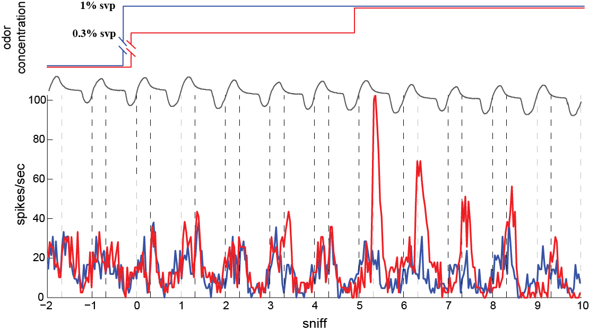

Concentration change detectors in olfaction
Olfactory navigation requires comparing of, odor concentration across samples distributed
in space and time. One potential strategy of odor source localization is sequential (temporal)
comparison: the animal chooses direction in the olfactory surroundings by detecting
concentration changes in time (ΔCt) across consecutive inhalations. To study the neural
processing of ΔCt, we developed an odor delivery system that allows rapid switching and
stabilization of different concentrations of an odor, such that concentration can be changed
on each sniff. We monitored activity of mitral/tufted (M/T) cells in the olfactory bulb of
mice in response to prolonged concentration presentations and to stimuli that flicker between
concentrations from sniff to sniff. We find that a subset of M/T responses are sensitive to ΔCt,
responding primarily to concentration changes. Our results indicate that M/T cells explicitly
compute ΔCt, providing a signal that may guide navigational decisions in downstream olfactory circuits.
